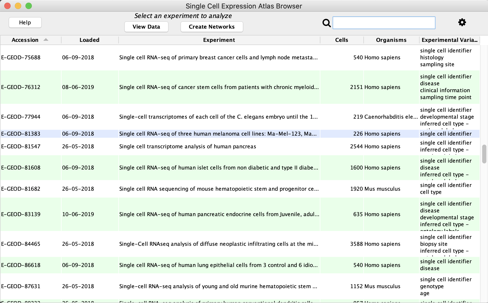
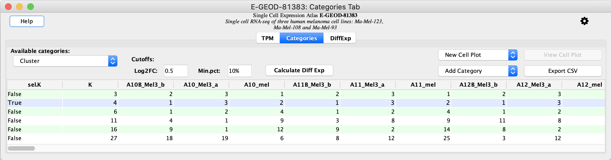
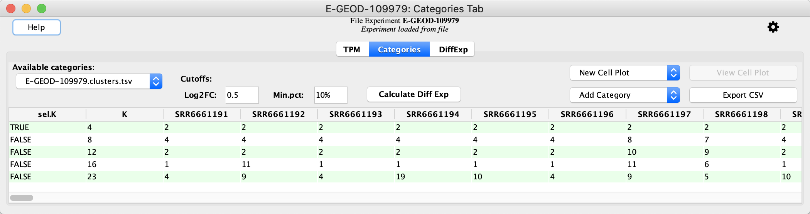
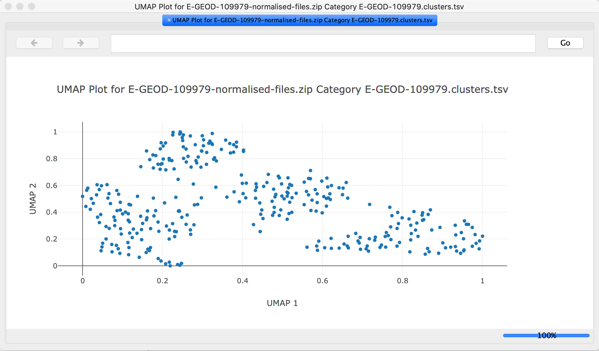
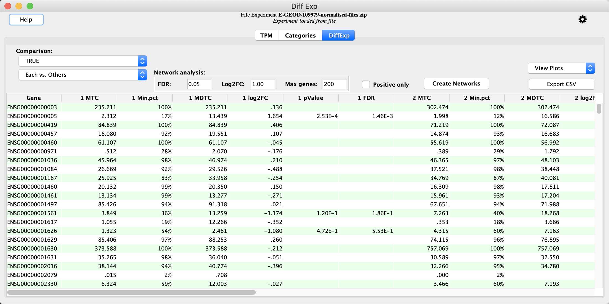
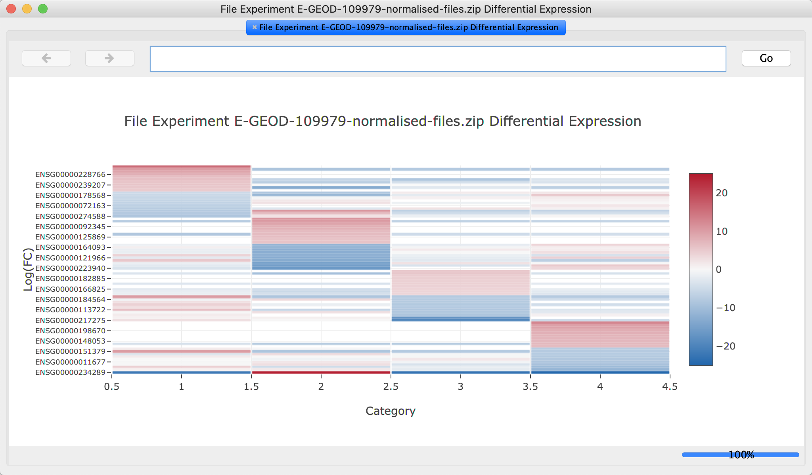
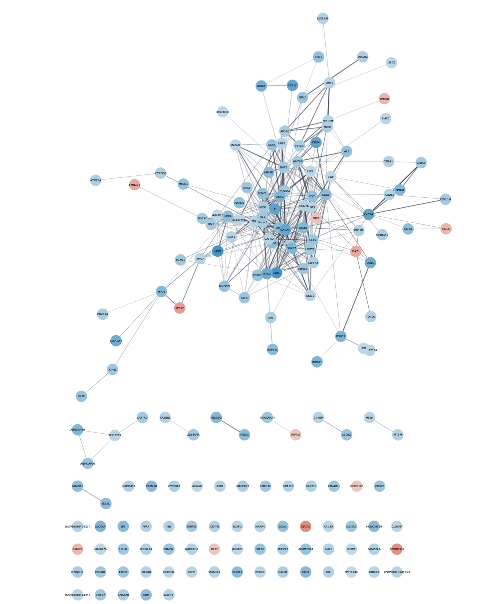

scNetViz - Single-cell RNASeq analysis
scNetViz is a Cytoscape app designed to support the biological interpretation of scRNAseq experiments. It is available from the Cytoscape App Store.
This tutorial includes two basic use cases, working with data from the EMBL-EBI Single Cell Expression Atlas, or local data. After loading the data into Cytoscape from local files or through the browser, we will generate plots from the data, perform differential expression analysis, generating networks from the top genes, and functionally characterize and visualize the networks.
Setup
- Install and launch the latest version of Cytoscape.
- Install the scNetViz app and stringApp via
Apps → App Manager .
Use Case 1: Load Data via scNetViz Browser
- Launch Cytoscape. In the
Apps menu, selectscNetViz → Load Experiment → From Single Cell Expression Atlas... , or click the icon in the Cytoscape Toolbar.
icon in the Cytoscape Toolbar. - In the
Single Cell Experiment Atlas (SCEA), click on the column header for theAccession column to sort it. - Locate the experiment with acession number E-GEOD-81383 and click on the row to highlight it. Click
View Data to load the data.

Calculate Differential Expression
The data opens the
- In the
Categories Tab locate the clustering result with a sel.K value of True. This represents the best clustering result for the data. - Click the
Calculate Diff Exp button to calculate differential expression.

Create Networks
The
- Click the
Create Networks button to create networks. This will create networks by querying the STRING database for the protein products of genes that satisfy theNetwork Analysis cutoffs based on FDR and Log2FC, or Max genes count.
Create Networks
In this case, 6 networks are created; one for each cluster and one for all the clusters combined. The Log 2 Fold Change for each cluster is visualized as the node fill color. In the
Functional Enrichment Analysis
- Click on one of the clusters in the
Network Panel to select it. - In the
Get Enrichment section of theScNetViz tab, leave the default selections as-is and clickRetrieve Table . - The functional enrichment results will be loaded in a new
STRING Enrichment panel in theTable Panel below the network. - Click the
Draw charts using default color palette button . - Repeat these steps for the remaining networks.
Compare and Contrast
- Explore the 5 networks. Note that this data set includes three melanoma cell lines.
- Do the enriched terms make sense?
- Do you see any differences between the networks?
- Do you see any similarities between the networks?
- Look at the enriched terms for clusters 2,3, and 4 and compare with clusters 1 and 5. See any consistencies or differences?
Use case 2: Load a Local scRNA-Seq Dataset
In this workflow, we will load normalized data and cluster assignments from local files.
- Download the normalized data (zipped folder).
- Download the cluster assignments. When it opens in the browser, right-click and select
File → Save Page As... (Chrome, Firefox),File → Save As... (Safari).
Load data
- Launch Cytoscape. In the
Apps menu, selectscNetViz → Load Experiment → Import from file... . - Select Homo sapiens as the species, by typing directly into the drop-down. Browse to find the E-GEOD-109979 zip file under
File or directory with MTX matrix and headers . Click OK to load. - Leave
Skip first line of header files blank.
Load Categories
- In the
Experiment Data Table , click theAdd Category drop-down and selectImport from file... . - Browse to select the .csv file with category data, and leave remaining selections as the default.
Load Categories
Once the categories are loaded, the data viewer is updated:
Create UMAP Plot
- Under
New Cell Plot , select UMAP. Keep the default parameters.

Calculate Differential Expression
- In the
Categories Tab locate the clustering result with a sel.K value of True. This represents the best clustering result for the data. - Click the
Calculate Diff Exp button to calculate differential expression.

Create heatmap
Next, we will generate a heatmap showing the top differentially expressed genes:
- Under
View Plots , select Heatmap.

Create Networks
- In the
DiffExp tab, click theCreate Networks button to create networks from the STRING database.
In this case, 5 networks are created; one for each cluster and one for all the clusters combined. The Log 2 Fold Change for each cluster is visualized as the node fill color.
Exporting Networks
Cytoscape provides a number of ways to export results and visualizations:
- As an image:
File → Export → Network to Image... - To a public repository:
File → Export → Network to NDEx , orFile → Export → Collection to NDEx - As a Cytoscape JSON file:
File → Export → Network to File and select Cytoscape.js JSON as the format.